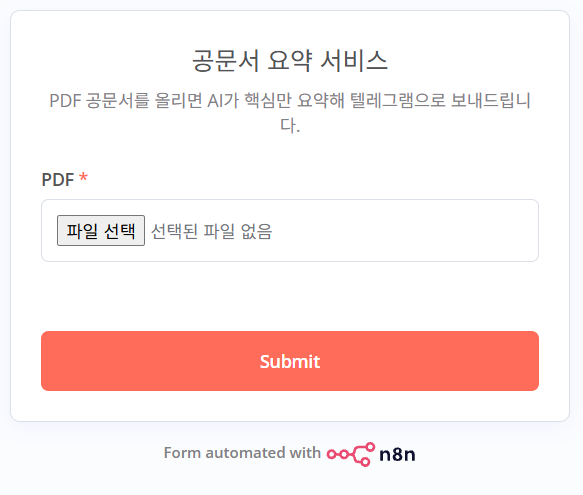

여기까지 한 번 실행해 보기Execute workflow → 연습용 공문(day2-p1-sample.pdf)을 올립니다. 텔레그램에 요약이 오면 위 갈래는 완성입니다.
이어서 같은 공문에서 제출 기한도 뽑아 캘린더에 올립니다. 이미 만든 흐름은 건드리지 않고 갈래만 하나 더 뻗습니다.
공문에서 기한 뽑아내기 — 두 번째 갈래PDF 텍스트 추출 노드 오른쪽 끝의 동그란 점을 잡고 빈 곳으로 끌어 놓은 뒤
Information Extractor를 고릅니다. (이미 선이 하나 나가 있어도 새 선을 더 낼 수 있습니다.)
Text → 표현식 모드로 {{ $json.text }} Schema Type → From Attribute Descriptions
Add Attribute를 눌러 아래 네 개를 만듭니다. Name과 Description을 채웁니다.
문서제목 → 공문서의 제목 (Required 켬) 제출기한 → 회신·제출의 마감 날짜를 YYYY-MM-DD 형식으로. 설명회·행사·조사 기간의 날짜와 헷갈리지 말 것. 마감이 없으면 빈 값 담당부서 → 공문을 보낸 부서 이름 필요조치 → 받는 기관이 해야 할 일을 한 줄로
설명이 곧 지시문입니다
AI는 Name이 아니라 Description을 읽고 값을 고릅니다. 공문에는 날짜가 여러 개 나오므로,
제출기한 설명을 "마감 날짜"라고 구체적으로 적고 다른 날짜와 구분하라고 알려 줘야 합니다.
1일차 06강의 프롬프트와 같은 원리입니다.
아래쪽 Model 자리 +에서 Google Gemini Chat Model을 달고,
models/gemini-2.5-flash를 직접 고릅니다. 이 노드의 이름은 자동으로
Google Gemini Chat Model1이 됩니다. 그대로 두세요.
실행 후 OUTPUT을 보면 output 아래에 네 개 값이 나옵니다. 제출기한이 2026-12-18인지 확인하세요.
[그림 P1-6] 기한 추출 OUTPUT — output 아래 네 개 값
캡처 위치: 기한 추출 노드의 OUTPUT(JSON 또는 Table). 문서제목·제출기한(2026-12-18)·담당부서·필요조치가 보이는 화면
값은 {{ $json.text }}가 아니라 {{ $json.output.제출기한 }}처럼 output을 한 번 거쳐 꺼냅니다.
제출 기한을 캘린더에 등록하기기한 추출 오른쪽 + → Google Calendar → Create an event.
1일차 05강의 자격증명을 그대로 고릅니다.
이 식이 하는 일제출기한은 2026-12-18 같은 날짜 글자입니다. 뒤에 'T09:00:00'(오전 9시)를 붙이면
캘린더가 읽는 날짜·시각 형태가 됩니다. 글자와 글자를 +로 이으면 한 글자열이 됩니다.
[그림 P1-7] Start·End·Summary에 표현식을 채운 캘린더 노드
캡처 위치: 기한 일정 등록 노드 설정 화면. Start·End·Summary·Description 칸에 fx 표시와 미리보기 값이 보이는 모습
노드 이름 정리하기
공문서 업로드 폼 · PDF 텍스트 추출 · AI 요약 · 텔레그램 발송 ·
기한 추출 · 기한 일정 등록
실행하고 확인하기
Execute workflow → 임시 폼 주소로 파일 업로드
제출 후 몇 초 뒤 텔레그램에 📄 공문서 요약 메시지 도착 = 위 갈래 성공
구글 캘린더에 [공문 기한] 2026년 지역 어르신 돌봄 서비스 수요조사 협조 요청 일정이 2026-12-18 오전 9시로 생겼다면 아래 갈래도 성공
함정을 피했나요?
연습용 공문에는 날짜가 네 개 있습니다 — 조사 기간 끝(12월 12일), 사전 설명회(12월 3일), 제출 기한(12월 18일), 활동비 지급(2027년 1월).
일정이 12월 18일에 만들어졌다면 AI가 "제출 기한"이라는 설명을 제대로 읽은 것입니다. 다른 날짜로 만들어졌다면
제출기한의 Description을 더 구체적으로 고쳐 보세요.
[그림 P1-5] 브라우저에서 연 폼 화면. 파일 칸 이름이 PDF로 나오고 별표(*)는 필수라는 뜻입니다

폼 위쪽에는 앞에서 적은 제목
공문서 요약 서비스와 설명이 한글로 나오고, 파일 칸
이름만 PDF로 보입니다. 필드 이름을 영문으로 지어도
민원인이 헷갈리지 않는 이유가 이것입니다.
매번 Execute workflow를 누르지 않고 상시로 쓰려면,
오른쪽 위 활성화 스위치(Active)를 켜고
공문서 업로드 폼 노드에 표시되는 상시 주소를 즐겨찾기에
넣어두면 됩니다.
안 될 때
파일을 찾을 수 없다는 오류 — Input Binary Field 값과 폼 필드 이름 확인(왼쪽 INPUT 패널 참고)
요약이 텅 빔 — 스캔본 PDF는 글자 추출 불가, 워드/한글에서 만든 PDF로 재시도
모델을 못 찾는다는 오류 — models/gemini-2.5-flash 직접 선택, 자격증명 확인
텔레그램만 빨간색 — Chat ID 숫자 확인, 봇에게 먼저 말 걸었는지 확인
계속 기다림 — 30초 정도는 정상, 오래 걸리면 멈춘 노드 확인
캘린더에 일정이 안 생김 — 기한 추출 OUTPUT의 제출기한이 2026-12-18처럼 YYYY-MM-DD인지 확인(다른 모양이면 Description에 형식을 다시 강조)
기한이 없는 공문에서 캘린더 노드만 빨간색 — 정상입니다. 마감이 없으면 제출기한이 비어 일정을 만들 수 없지만, 위 갈래(요약)는 이미 끝나 있습니다
기한 추출의 OUTPUT이 비어 있음 — 왼쪽 INPUT에 text가 있는지, Text 칸이 {{ $json.text }}인지 확인
확인 문제
객관식Q1. 폼의 파일 업로드 필드 이름을 한글이 아니라 영문 PDF로 지어야 하는 이유는?
영문이 더 짧아서
n8n이 한글·특수문자를 밑줄로 바꿔버려 뒤에서 이름을 알아낼 수 없기 때문에
PDF 노드가 영문만 지원해서
폼 제목도 영문이어야 하기 때문에
정답 확인
정답: ② 필드가 담기는 자리 이름이 한글이면 ____PDF____처럼 깨져서 Input Binary Field에 적을 방법이 없습니다.
객관식Q2. 요약이 텅 비어 나올 때 가장 먼저 의심할 원인은?
텔레그램 자격증명 오류
스캔본 PDF(글자가 아니라 사진으로 된 PDF)
워크플로우 이름 오타
Chat ID 오류
정답 확인
정답: ② 스캔본 PDF는 글자가 아니라 사진이 들어 있어서 뽑아낼 글자가 없습니다.
단답형Q3. PDF 텍스트 추출 노드가 뽑아낸 글자는 어떤 이름의 항목으로 나오나요?
정답 확인
정답: text — 다음 단계에서 {{ $json.text }}로 가져다 씁니다.
객관식Q4. 공문에 날짜가 여러 개인데 AI가 엉뚱한 날짜를 기한으로 뽑았습니다. 가장 먼저 고칠 곳은?
캘린더 노드의 Start
기한 추출의 제출기한Description
텔레그램 노드
폼의 파일 필드 이름
정답 확인
정답: ② Information Extractor는 이름이 아니라 설명을 읽고 값을 고릅니다. 어떤 날짜를 원하는지 구체적으로 적어야 합니다.
이번 프로젝트 워크플로우 받기
따라오다 막혔다면 이 파일을 받아 n8n에서 불러오면 이어서 진행할 수 있습니다.
불러온 뒤 반드시 확인하세요
이 파일에는 자격증명이 들어 있지 않습니다. 불러온 뒤
Google Gemini Chat Model·Google Gemini Chat Model1·
텔레그램 발송·기한 일정 등록 네 노드를 각각 열어
자격증명을 다시 골라야 합니다. 그리고 두 자리표시자를 본인 값으로 바꿔야 합니다.
텔레그램 발송의 Chat ID →
여기에_본인_chat_id 기한 일정 등록의 Calendar →
본인이메일@example.com(본인 캘린더)
이 작업을 하지 않으면 불러온 워크플로우는 빨간
오류 표시가 난 채로 열립니다 — 고장난 것이 아니라 원래 그렇습니다.